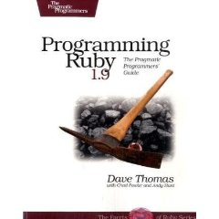
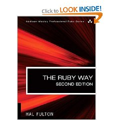

| z, ? | toggle help (this) |
| space, → | next slide |
| shift-space, ← | previous slide |
| d | toggle debug mode |
| ## <ret> | go to slide # |
| c, t | table of contents (vi) |
| f | toggle footer |
| r | reload slides |
| n | toggle notes |
| p | run preshow |
#!/usr/bin/env ruby
# Ruby Comment
puts "Helloworld!" if var == 10
puts “Variable is 10”
elsif var == 20
puts “Variable is 20″
else
puts “Variable is other”
end
if not var == 10
print “Variable not 10”
end
if var == 1 or var == 2
print “Variable 1 or 2”
endInteger case
i = 8
case i
when 1, 2..5
puts "1..5"
when 6..10
puts "6..10"
endCase with text
j = "mat"
case j
when 'on', 'the'
puts "incedantal"
when /.at/
puts "begins xat"
endfor i in (0..9)
puts i
end(0..9).each do |i|
puts i
end'...' instead of -1
(0...10).each do |i|
puts i
endUnassigned values are nil.
1 is true
0 is true
"" is true
nil is false
false is falseputs 'true' if 1a_array = [0,1]
a_array[3] = 3
puts a_array.inspect
> [0, 1, nil, 3]
a_hash = {:one => 1, :two => 2}
puts a_hash[:one]
> 1
a_hash[:one] = 3
puts a_hash[:one]
> 3
a_hash[:three] = 1
puts a_hash
> {:one=>3, :two=>2, :three=>1}no sigil
local_variable = 0 Available within Class, each instance is unique.
@instance_variable = 0Best Avoided.
Available to all instances of Class, including inheritance.
Only one version exisits.
@@class_variable = 0Available to all, one version exists.
$global_variable = 0 Implicit Typing
CONSTANT_VARIABLE = 0
a_integer = 12
a_float = 12.3
a_string = “123.4”
a_array = []
a_hash = {}local_variable = 0
@instance_variable = 0
$gloabl_variable = 0require 'use_lower_case'
a_new_var = UseLowerCase.new()<% a=12 %>
<% b=20 %>This could be written as:
<% a = 10
b = 20 %>
To generate output .notes equivalent of puts in scripts
<%= a %>
Dynamic port lists can be created
module scalable (
<% (0...CHANNELS).each do |i| -%>
rx_<%= i %>,
<% end -%>
clk,
rst_an
);
endmoduleCreate scalable.v from scalable.rv
$ ruby_it --parameter CHANNELS=4 \
--file scalable.rv
>"CHANNELS=4"
>File: scalable.rv Output: ./
Generated into scalable.v
@@@ verilog
module scalable (
rx_0,
rx_1,
rx_2,
rx_3,
clk,
rst_an
);
endmodule
Installation
gem install ruby_it
Usage
$ ruby_it --help
Common options:
-h, --help Show this message
--version Show version
-f, --file input_filename Input source file to evaluate
Specific options:
-v, --[no-]verbose Run Verbosely
-q, --quiet Run Quiet, not Verbose
--parameter param Command line parameters (Override data file settings) -c, --config config_data Load Config File
-p, --outpath output_path Redirect generated file output
-o, --out output_filename Define different generated filename from source file
Better white space control
Remove trailing white space including line returns
<% -%>

ISBN 978-1934356081

ISBN 978-0672328848